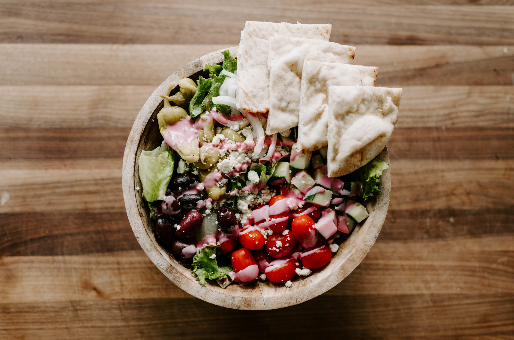

Home
Detroit Greek Salad

The Detroit Greek salad is an imfamous dish combined of two cultures come together.
Greek immigrants helped inspire the dish.
Ingredients
- 3 to 4 cups chopped iceberg lettuce
- 1/2 cup crumbled feta cheese
- 1 small beefsteak tomato, cut into wedges
- 3 to 4 cucumber slices
- 4 canned beet slices (save some of the canned liquid for the dressing)
- 4 pepperoncini, for garnish
- 4 Kalamata olives
- 1/4 cup canned garbanzo beans (Optional)
- 1/4 cup thinly sliced red onion (Optional)
Directions
- On a large plate or bowl, assemble lettuce and top with feta, tomato, cucumbers, beets, pepperoncini, olives, beans, and onion.
- Serve with Pink Dressing on the side.